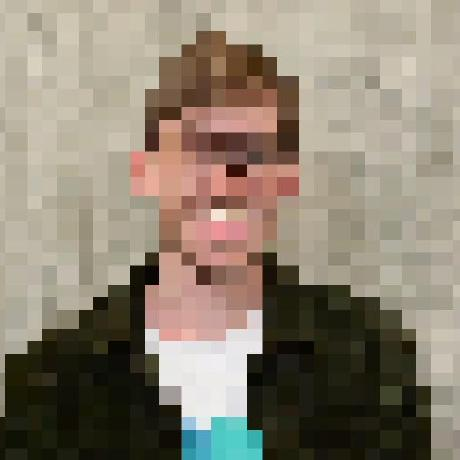

Hi, I'm Nils.

I'm a PhD student in Earth System Sciences in the Spatial Ecology and Remote Sensing Group at the University of Zurich studying the effect of heatwaves, droughts, and wildfires on Arctic tundra ecosystems.
{% include feature_row id="feature_row" type="left" %}